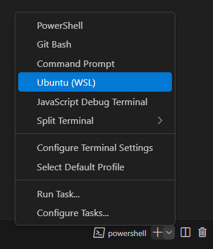

Firmware
Esta secção contém as instruções para clonar, configurar, compilar e testar o firmware do Crazyflie.
Visual Studio Code
Vamos utilizar o Visual Studio Code como IDE (Ambiente de Desenvolvimento Integrado), portanto o primeiro passo será instalar ele.
- Baixe o Visual Studio Code em seu site oficial e instale ele.
Clonando
Vamos criar uma cópia do repositório do firmware para que você possa modificá-lo e compilar localmente.
Fork
- Crie um fork do repositório que contém o firmware para a sua conta do GitHub.
Clone
-
Abre o Visual Studio Code
-
Clique em
Clone Git Repository... -
Coloque o endereço do repositório forkado para sua conta do GitHub:
1https://github.com/username/quadcontrol-firmware.gitAtenção
Você deve substituir
usernamepelo seu nome de usuário do GitHub -
Pressione
Entere selecione o local onde você quer salvar esse repositório. -
Quando ele terminar de clonar e perguntar se você gostaria de abrir o repositório clonado, clique em
Open. -
Abra uma janela do terminal clicando em
Terminal>New Terminal(ou usando o atalhoCrtl+Shift+').Atenção
Caso esteja utilizando Windows, ele abre por padrão um terminal do PowerShell, mas você deve alternar para um terminal do WSL (Ubuntu): 
-
Inicialize todos os submódulos pelo terminal:
1git submodule update --init --recursive
Organização
O firmware é composto por 2 pastas e 2 arquivos:

Vamos entender cada um deles:
crazyflie-firmware- Pasta que contém o firmware do Crazyflie, o qual utilizaremos como submódulosrc- Pasta que contém os programas que vamos desenvolver ao longo do cursoKbuild- Arquivo que define o programa que será compiladoradio.config- Arquivo que define o canal de rádio utilizado para se comunicar com o Crazyflie
A pasta src possui apenas um programa, que é o example_hello_world.c. Abra esse arquivo e veja um exemplo de programa bem simples:
| example_hello_world.c | |
|---|---|
1 2 3 4 5 6 7 8 9 10 11 12 13 14 15 16 17 | |
Definimos qual o programa que vamos compilar através do arquivo Kbuild:
| Kbuild | |
|---|---|
1 | |
Conforme formos desenvolvendo novos programas, não podemos esquecer de atualizar o arquivo Kbuild com o nome do programa que queremos compilar.
Atenção
Note que a extensão do arquivo aqui é .o e não .c. O importante é o nome do programa estar igual.
Configurando
Vamos agora ajustar as configurações do firmware, como canal de rádio e plataforma de hardware, para preparar o ambiente de compilação.
Radio
-
Abra o arquivo
radio.config -
Altere o canal do rádio conforme a numeração do seu Crazyflie.
radio.config 1RADIO_CHANNEL=1
Submódulo
-
Navegue até a página
crazyflie-firwmare>src>modules>srce abra o arquivostabilizer.c. -
Comente as linhas 223-226, 326 e 356, conforme abaixo:
stabilizer.c 221 222 223 224 225 226 227
static void setMotorRatios(const motors_thrust_pwm_t* motorPwm) { // motorsSetRatio(MOTOR_M1, motorPwm->motors.m1); // motorsSetRatio(MOTOR_M2, motorPwm->motors.m2); // motorsSetRatio(MOTOR_M3, motorPwm->motors.m3); // motorsSetRatio(MOTOR_M4, motorPwm->motors.m4); }stabilizer.c 326//stateEstimator(&state, stabilizerStep);stabilizer.c 355 356 357
} else { // motorsStop(); }
Informação
Fazemos isso para cortornar o algoritmo proprietário do controlador do Crazyflie (ele vai continuar rodando em segundo plano, mas vamos ignorar seus comandos para podermos usar os nossos).
Plataforma
- Configure o firmware para a paltaforma do Crazyflie 2.1 Brushless rodando o seguinte código no terminal:
1make cf21bl_defconfig
Compilando
Agora vamos compilar o firmware e gravá-lo no drone para que ele possa rodar o seu código. Essa etapa é bem simples e deverá ser repetida toda vez que quisermos enviar um novo programa ao Crazyflie.
Build
- Compile o firmware:
1make
Flash
-
Programe o firmware no Crazyflie:
1make cloadAtenção
- O Crazyflie 2.1 Brushless precisa estar ligado
- O Crazyradio PA precisa estar conectado na porta USB
Testando
Por fim, vamos apender a usar o CFClient para conectar ao drone e garantir que tudo está funcionando como esperado.